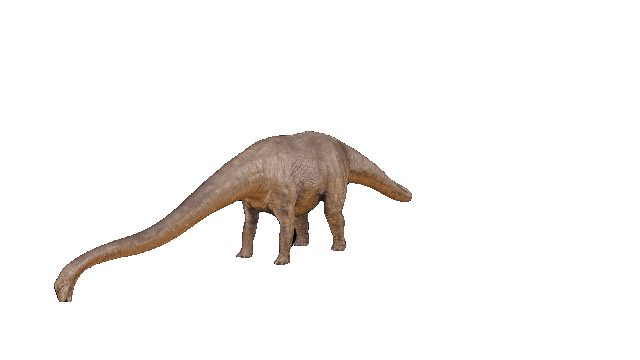
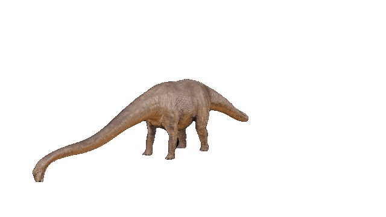

데이노니쿠스 (Deinonychus)
1969년 미국에서 처음으로 골격 화석이 발견되었으며 백악기 초기에 살았던 육식 공룡이다. 데이노니쿠스(Deinonychus)라는 이름은 '무서운 발톱'이라는 뜻이다. 2족 보행을 했는데 뒷다리의 4개의 발가락 중 특히 2번째 발가락에는 약 13cm길이의 긴 발톱이 나 있었다. 이 긴 발톱으로 먹이를 찔러 죽였을 것으로 보인다. 두개골은 긴 편인데 턱이 잘 발달되어있고 날카로운 이빨이 나 있다. 머리가 크고 뇌가 무거워서 머리가 꽤 좋았던 걸로 보이고 눈이 발달했다. 무리지어 사냥했는데 몸이 가볍고 민첩하게 움직였으며 새를 닮은 외모 때문에 파충류와 조류의 진화의 증거로 제시되기도 한다. 모식종은 데이노니쿠스 안티르호푸스(Deinonychus antirrhopus)이다.
1969년 미국에서 처음으로 골격 화석이 발견되었으며 백악기 초기에 살았던 육식 공룡이다. 데이노니쿠스(Deinonychus)라는 이름은 '무서운 발톱'이라는 뜻이다. 2족 보행을 했는데 뒷다리의 4개의 발가락 중 특히 2번째 발가락에는 약 13cm길이의 긴 발톱이 나 있었다. 이 긴 발톱으로 먹이를 찔러 죽였을 것으로 보인다. 두개골은 긴 편인데 턱이 잘 발달되어있고 날카로운 이빨이 나 있다. 머리가 크고 뇌가 무거워서 머리가 꽤 좋았던 걸로 보이고 눈이 발달했다. 무리지어 사냥했는데 몸이 가볍고 민첩하게 움직였으며 새를 닮은 외모 때문에 파충류와 조류의 진화의 증거로 제시되기도 한다. 모식종은 데이노니쿠스 안티르호푸스(Deinonychus antirrhopus)이다.
트리케라톱스 (Triceratops)
트리케라톱스는 후기 백악기(6800만 년 전 ~ 6500만 년 전)에 살았으며 북아메리카에서 발견된 각룡류인 초식공룡. 트리케라톱스는 머리에 세 개의 뿔과 넓은 프릴을 가진 특징을 가졌습니다. 각룡류 중에서 몸집이 큰 편에 속하여 육상 공룡 중 머리가 가장 큰 것에 속하고 있다.
트리케라톱스는 후기 백악기(6800만 년 전 ~ 6500만 년 전)에 살았으며 북아메리카에서 발견된 각룡류인 초식공룡. 트리케라톱스는 머리에 세 개의 뿔과 넓은 프릴을 가진 특징을 가졌습니다. 각룡류 중에서 몸집이 큰 편에 속하여 육상 공룡 중 머리가 가장 큰 것에 속하고 있다.
브라키오사우루스 (Brachiosaurus)
용반목(Saurischia), 용각아목(Sauropodomorpha)에 속하는 브라키오사우루스과(Brachiosauridae)의 대표적인 속으로 50톤 정도의 몸무게에 16m에 이르는 긴 목으로 유명하다. 1900년 미국 콜로라도주에서 처음 발견된 이후 아프리카 탄자니아에서 거의 완전한 골격이 발견되어 현재 독일자연사박물관에 소장되어있다.
용반목(Saurischia), 용각아목(Sauropodomorpha)에 속하는 브라키오사우루스과(Brachiosauridae)의 대표적인 속으로 50톤 정도의 몸무게에 16m에 이르는 긴 목으로 유명하다. 1900년 미국 콜로라도주에서 처음 발견된 이후 아프리카 탄자니아에서 거의 완전한 골격이 발견되어 현재 독일자연사박물관에 소장되어있다.

 
